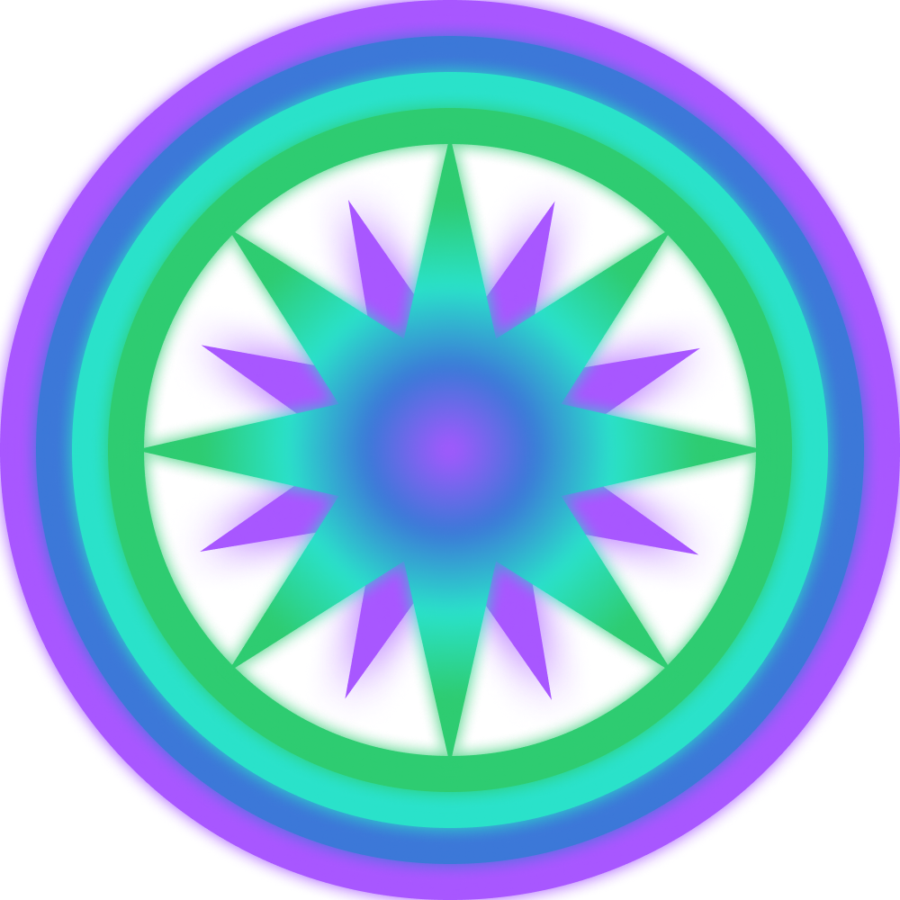
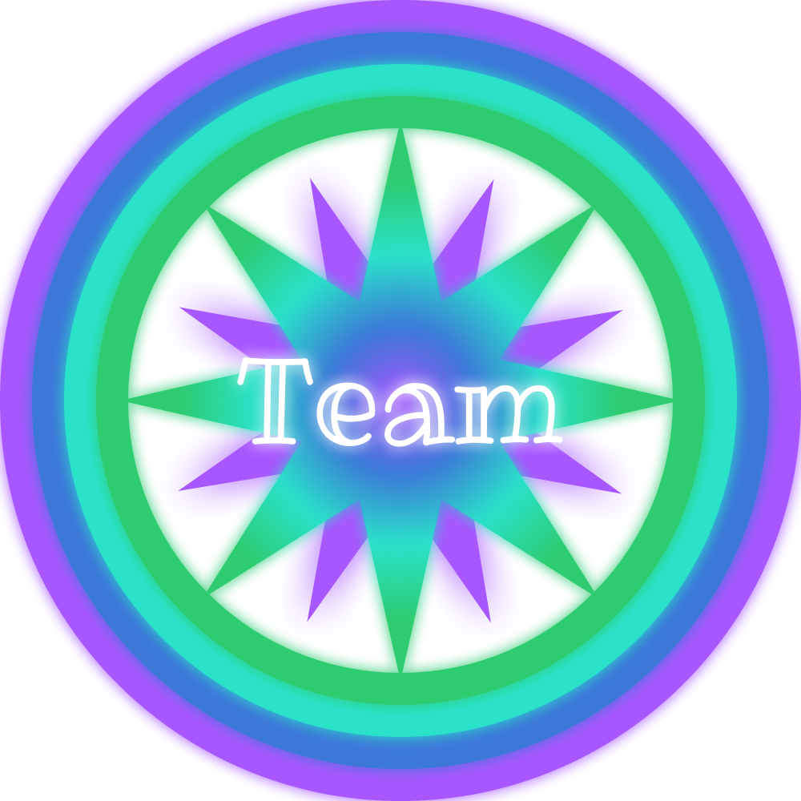
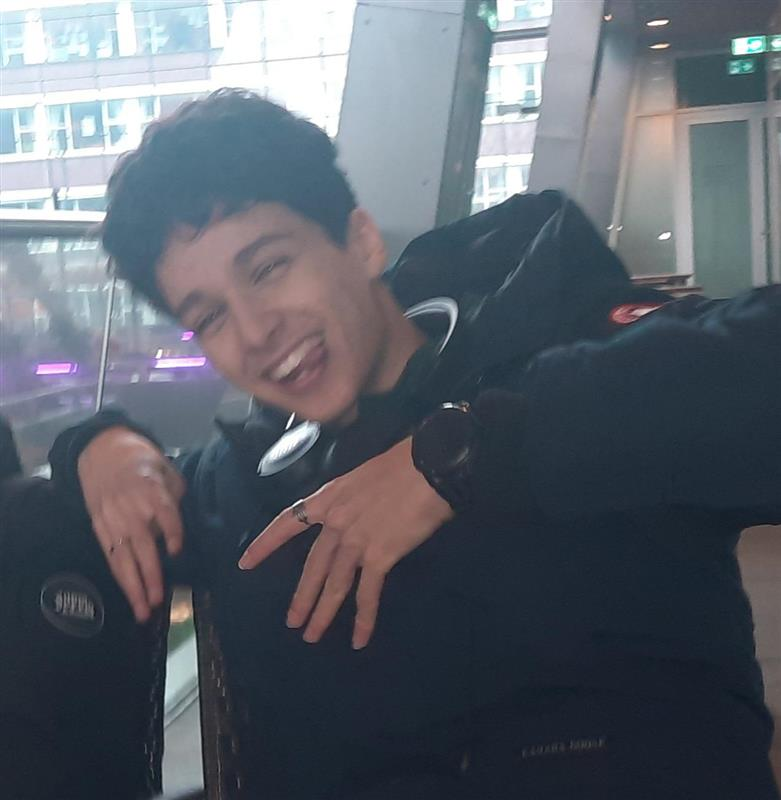
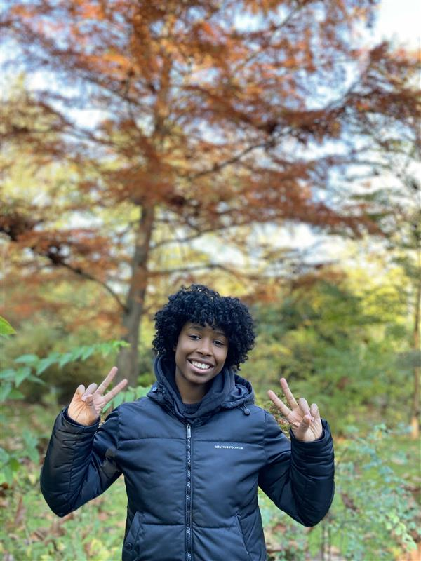
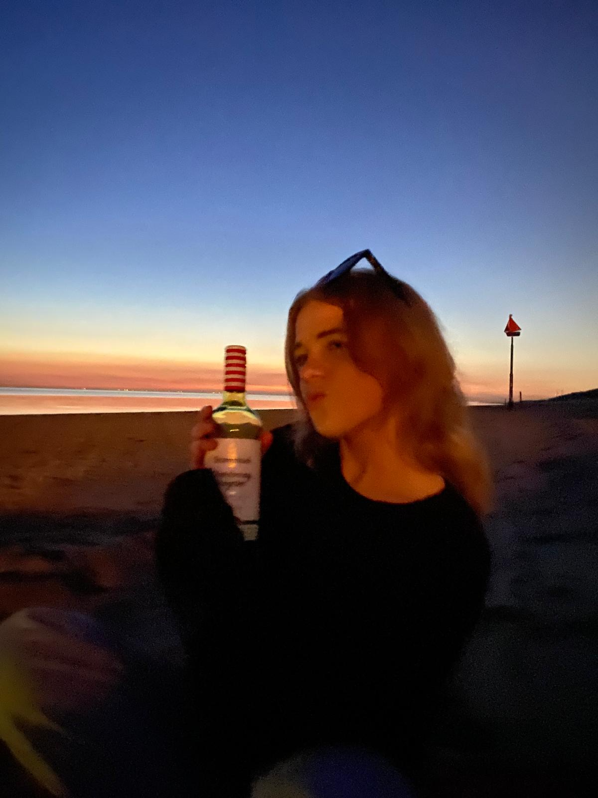
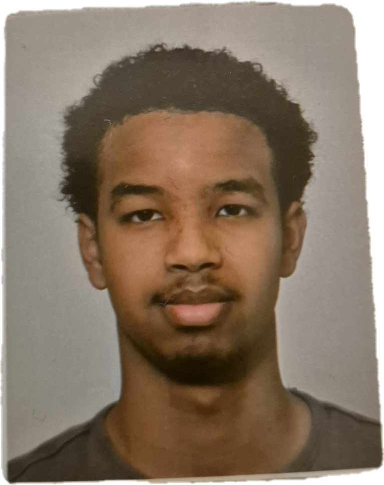

QuizzesWie zitten er in ons team


Mijn naam is Soufyan, ik ben 16 jaar oud en studeer creatiive software development aan het Grafisch Lyceum Rotterdam. Ik heb deze opleiding gekozen omdat ik altijd al heb gehouden van games en via deze opleiding wil doorstromen naar de HBO opleiding; game development. Ik heb al ervaring met game development maar niet veel met web development, ik wil met behulp van deze opleiding dat veranderen. Ik streef ernnaar om uiteindelijk een all-round software engineer te worden, iemand die meerdere talen kent en zowel back-end als front-end kan doen.

Mijn naam is Fabian, ik ben 17 jaar oud en ik studeer software development. Al sinds ik een kind was, ben ik gefascineerd door technologie en software, en ik ontdekte al snel dat ik het ontzettend leuk vond om dingen zelf te bouwen, zoals apps en websites. Het creëren van iets uit niets en het oplossen van technische problemen geeft me echt voldoening, en daarom heb ik ervoor gekozen om software development te studeren. In mijn vrije tijd hou ik van gamen, wat niet alleen ontspanning biedt, maar me ook helpt mijn analytisch denkvermogen en strategisch inzicht te ontwikkelen. Daarnaast kijk ik regelmatig YouTube-video's om JavaScript en andere programmeertalen beter te begrijpen en mijn vaardigheden verder te verbeteren. Ik ben altijd op zoek naar nieuwe manieren om te leren, of dat nu door online tutorials, boeken of het werken aan persoonlijke projecten is. Mijn ambitie is om uiteindelijk een carrière op te bouwen in de technologie, waar ik mijn passie voor software kan combineren met mijn wens om impact te maken door middel van innovatieve oplossingen.

Hoi! Ik ben Guusje, 16 jaar oud en ik studeer Creative Software Development. Ik ben super geïnteresseerd in technologie en design, en ik hou ervan om mijn creativiteit te combineren met programmeren. Of het nu gaat om het bouwen van websites, apps of interactieve ervaringen, ik ben altijd op zoek naar nieuwe manieren om mijn ideeën tot leven te brengen. In mijn vrije tijd game ik graag en breng ik tijd door met vrienden. Ik vind het leuk om samen te chillen, nieuwe games te ontdekken en gewoon plezier te maken. Daarnaast werk ik in de horeca, zowel in de keuken als in de bediening. Het is een drukke, maar leuke omgeving waarin ik veel leer en altijd in contact ben met mensen

Mijn naam is Salahedin Said, 18 jaar, ik ben geboren in Nederland en sinds kleins af aan al gefascineerd over computers, op latere leeftijd toen ik begon na te denken welke kant ik op zou willen gaan was er maar een optie die ik graag wilde en dat was developen. ik ben begonnen met websites en vooral talen zoals HTML, CSS en Javascript gebruik ik dagelijks maar in de toekomst hoop ik nog meer te weten over andere talen en de talen die ik zelf nu gebruik. Naast programmeren doe ik ook andere dingen in mijn leven zo hou ik wel van gamen vroeger iets meer maar doe het nog steeds met regelmaat en ik sport veel omdat als je 8 uur per dag zit en typt dat beweging daarbij ook belangerijk is en vind het natuurlijk leuk.